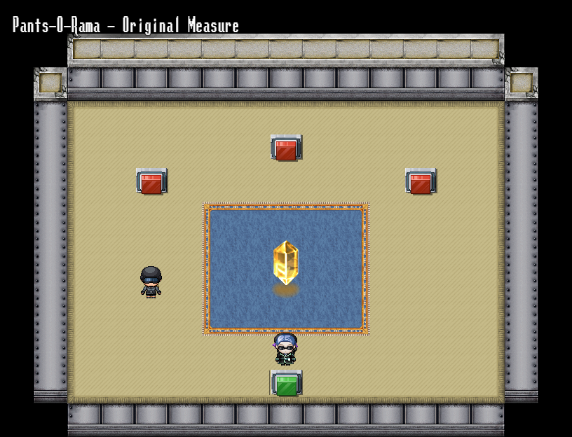
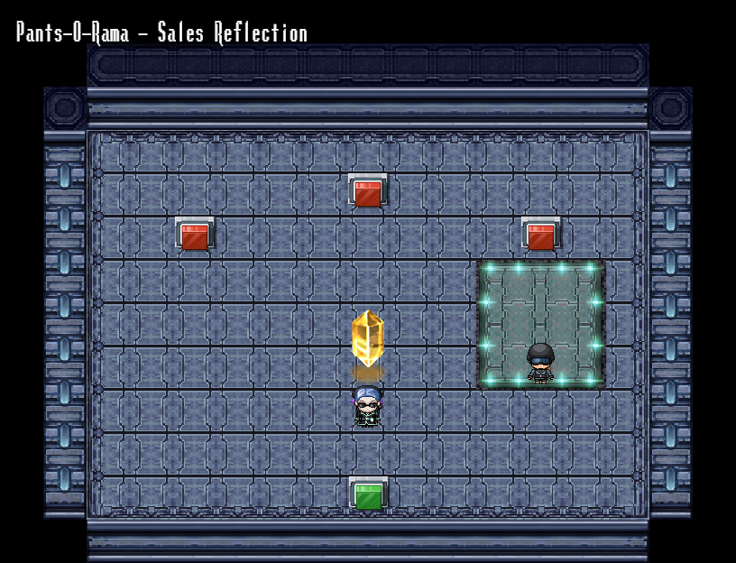
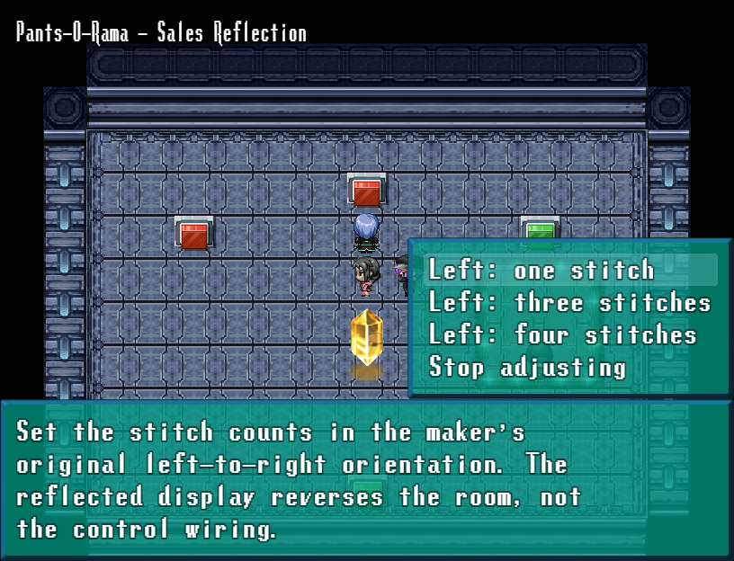
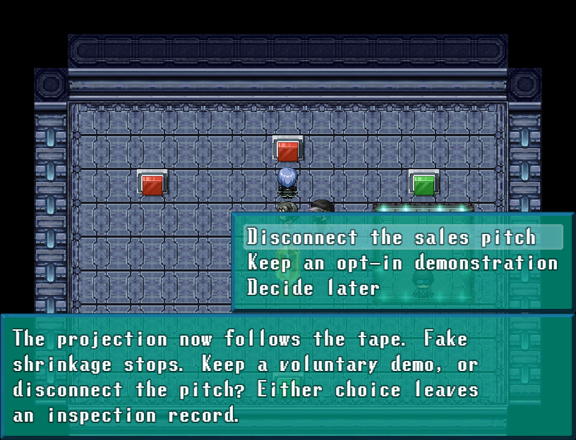

An optional Pants-O-Rama inspection after the original SEAM reward. Compare a warm showroom with its blue sales reflection, recover the original stitch pattern, and decide whether the pitch is disconnected or kept as an opt-in demonstration.
The green return station always exits. Wrong adjustments are free; both policies earn150 Credits and1 Panacea once. Bodies, clothing and gear stay unchanged.



